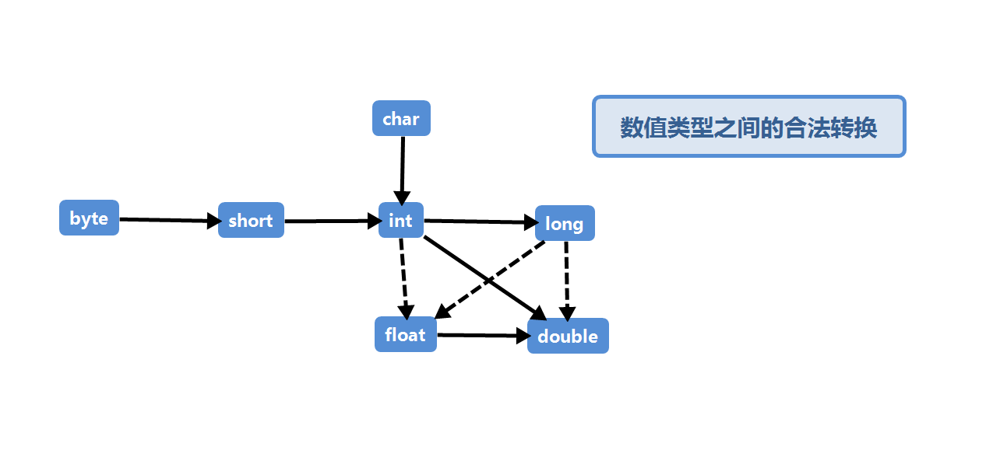
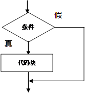
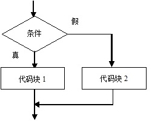
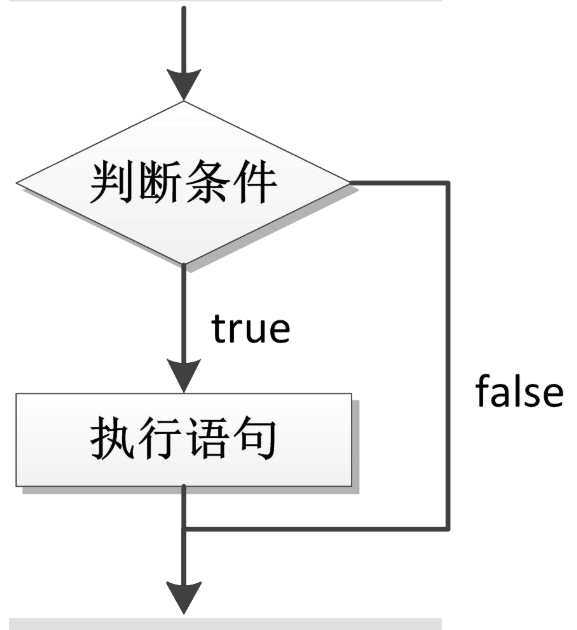

第二章 基础知识
本章讲解Java的基础知识，数据类型，变量，常量，输入输出，控制流程等等
2.1 关键字
特点
- 完全小写的字母
- 编辑器（idea）中有特殊的颜色
2.2 标识符
是指在程序中，我们自己定义的内容。比如类的名字和变量的名字等等，都是标识符。
- 命令规则
- 标识符可以包含 英文字母26个(区分大小写)、0-9数字、$（美元符号）、和_（下划线）。
- 标识符不能以数字开头
- 标识符不能是关键字
- 命名规范
- 类名规范：首字母大写，后面每个单词首字母大写（大驼峰式）。
- 变量名规范：首字母小写，后面每个单词的首字母大写（小驼峰式）。
- 方法名规范：同变量名
2.3 注释
注释就是对代码的解释和说明，其目的是让人们能够更加轻松地了解代码。
和其他程序一样注释也不会出现在可执行程序中。
因此在程序中根据需要添加任意的注释，而不必担心可执行的代码会膨胀。
常见的注释有三种
- 单行注释
- 多行注释
- 可以自动生成文档的注释
单行注释
System.out.println("Hello word!") // 这是一个单行注释
最常见的就是单行注释 注释的内容从 // 开始到本行结束
多行注释
当需要长篇注释的时候，即可以在每行的注释前面标记 // ，也可以使用 /* 和 */ 将一段比较长的注释括起来
/*
这里是的一个多行的注释
*/
2
3
可以自动生成文档的注释
在java中，还有一种可以自动生成文档的注释，这种注释以 /** 开始，以 */ 结束。
/**
* 这是一个java代码程序
* @version 1.0.0 2019-01-01
* @author HyterMartix
*/
public class helloword {
public static void main(String[] args) {
System.out.println("print");
}
}
2
3
4
5
6
7
8
9
10
2.4 数据类型
Java是一个强类型语言。这就意味着必须为每一个变量声明一种类型。
在java中有8种基本数据类型，其中有4种整型、2种浮点类型、1种用于表示Unicode编码的字符单元的字符类型char和一种用于表示真值得boolean类型
整型
用于表示没有小数部分的数值。
它允许是负值。Java提供了4种整型。
| 类型 | 存储需求 | 取值范围 |
|---|---|---|
| int | 4字节 | -2147483648 ~ 2147483647 |
| short | 2字节 | -32768 ~ 32767 |
| long | 8字节 | -9223372036854775808 ~ 9223372036854775807 |
| byte | 1字节 | -128 ~ 127 |
在java中,整型的范围和运行Java代码的机器无关。这就解决了软件从一个平台移植到另一个平台，或者在同一个平台中的不通道额操作系统之间进行移植给程序员带来的诸多问题。
长整型数值后面有个L或l，如：400000000000L
浮点类型
浮点类型用于表示带小数部分的数值。
在Java中有两种浮点类型
| 类型 | 存储需求 | 取值范围 |
|---|---|---|
| float | 4字节 | 大约 ± 3.40282347E+38F（有效位数6 ~ 7位） |
| double | 8字节 | 大约 ± 1.79769313486231570E+308（有效位数为15位） |
double表示这种数据类型的数值精度是float类型的两倍（亦或成双精度数值）。绝大部分应用程序都采用double类型。 在很多情况下，float类型的精度很难满足需求。
float类型的数值有一个后缀F或f(例如3.14f)。没有后缀F的浮点数值(如3.14)默认为double类型。当然也可以在浮点数值后面加D或d表示double类型（如3.14D）
char类型
char类型原本用于表示单个字符。不过，现在情况已经有所变化。如今，有些Unicode字符可以用一个char值描述，另外一些Unicode字符则需要两个char值。
char类型的字面量值要用单引号括起来。例如'A'是编码值为65所对应的字符常量。它与"A"不同，"A"是包含一个字符A的字符串。 char类型的值可以表示为十六进制值，其范围从\u0000到\Uffff，例如:\u2122表示注册符号（™）
除了转义序列\u之外，还有一些用于表示特殊字符的转移序列
| 转义序列 | 名称 | Unicode值 |
|---|---|---|
| \b | 退格 | \u0008 |
| \t | 制表 | \u0009 |
| \n | 换行 | \u000a |
| \r | 回车 | \u000d |
| " | 双引号 | \u0022 |
| ' | 单引号 | \u0027 |
| |反斜杠 | \u005c |
警告
Unicode转移序列会在解析代码之前得到处理。例如，"\u0022+\u0022"并不是会得到一个由引号保卫加括号构成的字符串。实际上，\u0022会在解析之前转回为"这里胡得到""+""，也就是一个空串。
更隐秘的，一定要当心注释中的\u。注释
// \u000A is a newline
会产生一个语法错误，因为读程序的时\u000A会替换成一个换行符。类似的下面的这个注释
// Look inside C:\users
也会产生一个语法错误，因为\u后面并未跟着4个十六进制数
Unicode 和 char类型 暂略
暂略
boolean类型
boolean（布尔）类型有两个值：false和true，用来判定逻辑条件。整型值和布尔值之间不能进行相互转换
2.5 变量
在java中，每个变量都会有个类型（type）。在声明变量时，变量的类型位于变量名之前。
//例如
double salary;
int vacationDays;
long earthPopulation;
boolean done;
2
3
4
5
可以看到，每个声明以分好结束，由于声明是一条完整的Java语句，所以必须以分号结束。
变量名必须是一个以字母开头并由字母或数字构成的序列。需要大多数程序设计语言相比，Java中的“字母”和“数字”的范围更大。字母包括'A'~'Z'、'a'~'z'、'_'、'#39;或在某种语言中表示字母的任何Unicode字符。同样数字包括'0'~'9'和在某种语言中表示数字的任何Unicode字符。但是'+'和'©️'这种符号不能出现在变量名中，空格也不行。
变量名中所有的字符都是有意义的，并且大小写敏感。变量名的长度基本上没有限制。
提示
如果想要知道哪些Unicode字符属于Java中的"字母",可以使用Character类的isJavaIdentifierStart和isJavaIdentifierPart方式来检查。
另外，不能使用Java保留字作为变量名。
可以在同一行声明多个变量：
int i, j;// both are integers
不过并不提倡这种风格。逐一声明每一个变量可以提高程序的可读性。
变量初始化
声明一个变量以后，必须用赋值语句对变量进行显示初始化，千万不要使用未初始化的变量。例如，java编译器认为下面语句是错误的：
int vacationDay;
System.out.println(vacationDay); // 错误，变量没有初始化
2
可以使用=来给声明过的变量进行赋值
int vacationDay;
vacationDay = 12;
// or 也可以将声明和初始化放在同一行
int vacationDay = 12;
2
3
4
最后，在Java中可以将声明放在代码的任何地方。例如，下列的代码书写形式在Java中完全是合法的。
double sallary = 65000.0;
System.out.println(sallary);
int vacationDay = 12;
2
3
注意
- 如果创建多个变量，那边变量之间的名称不可以重复
- 对于float和long类型来说，字母后缀F和L不要丢掉
- 如果使用byte或者sheort类型的变量，那么右侧的数据值不螚超过左侧类型的范围
- 没有进行赋值的变量，不能直接使用：一定要赋值之后，才能使用
- 变量使用不能超过作用域的范围
2.6 常量
在Java中，利用关键字fina指示常量
public class Constants
{
public static void main(String[] args){
final double CM_PER_INCH = 2.54;
double paperWidth = 8.5;
double paperHeight = 11;
System.out.println("Paper size in centimeters:"
+ paperWidth * CM_PER_INCH + " by " + paperHeight * CM_PER_INCH);
}
}
2
3
4
5
6
7
8
9
10
关键字final表示这个变脸只能被赋值一次。一旦赋值之后就不能再改了。习惯上，常量名使用全大写。
在Java中，经常希望某个常量可以在一个勒种多个方法中使用，通常将这些常量成为类常量。可以使用关键字static final设置一个类常量。
public class Constants2
{
public static final double CM_PER_INCH = 2.54;
public static void main(String[] args){
double paperWidth = 8.5;
double paperHeight = 11;
System.out.println("Paper size in centimeters:"
+ paperWidth * CM_PER_INCH + " by " + paperHeight * CM_PER_INCH);
}
}
2
3
4
5
6
7
8
9
10
11
需要注意，类常量的定义位于main方法的外部。因此，在同一个类的其他地方种也可以使用这个常量，而且，如果一个常量被声明为public，那么其他类的方法也可以使用这个常量。
2.7 运算符
在Java中，使用算术运算符 + - * \ 表示加减乘除运算，当参与/运算的两个操作数都是整数时，表示整数除法；否则，表示浮点除法。整数的求余操作（取模）用%表示。例如，15/2等于7，15%2等于1，15.0/2等于7.5。 注意整数被0除将会产生一个异常，而浮点数被0整除将会得到无穷大或NaN结果。
数学函数与常量
在Math类中，包含了各种各样的数学函数。具体的后面实际用到在来补充吧
数值类型的转换
经常需要将一种数值类型转换为另一种数值类型。

在图中，有6个实心箭头，表示无信息丢失的转换；有3个虚线的箭头，表示可能有精度损失的转换。
在运算中操作数需要转换成同一种类型
- 如果两个操作数中有一个是double类型，另一个操作数就会转换为double类型。
- 否则，如果其中一个操作数是float类型，另一个操作数将会转换为float类型
- 否则，如果其中一个操作数是long类型，另一个操作数将作为long类型
- 否侧，两个操作数都将被转为int类型。
其实就是两个操作数默认往其中一个最大精度的类型转换
强制类型转换
既然有默认的类型转换，那么也就会有强制的类型转换，将其他的类型转换为我们自己需要的类型，但是这样就伴随着会有精度丢失的问题。
double x = 9.997;
int nx = (int)Math.round(x); // 9
2
警告
如果是同讲一个数值从一个类型强制转换为拎一个类型，而又超过出了目标类型的取值范围的，结果就可能截断成一个完全不同的值。例如(byte)300的实际值为44.
结合赋值和运算符
可以在赋值运算中只用二元运算符，这是一种很方便的简写形式
x += 4;
// 等价于
x = x + 4;
2
3
提示
一般地，要把运算符放在 = 号的左边，例如 *= 或 %=
自增与自减运算符
自增就是加1，自减就是减1. ++表示自增,--表示自减。
int n = 7;
int m = 7;
int x = 7;
int y = 7
int a = 2 * ++n; // a = 16, n = 8;
int b = 2 * m++; // b = 14, m = 8;
int c = 2 * --x; // c = 12, x = 6;
int d = 2 * y--; // d = 14, y = 6;
2
3
4
5
6
7
8
9
虽然上面的代码都是自增 自减，虽然自增/自减的效果一样， 但是由于符号++/--在位置的不同（前缀/后缀），用在表达式中就有区别了。
前缀（++n,--x）,是先做自增/自减再做运算, 后缀（m++,y--）,是先做运算，再做自增/自减。
关系和boolean运算符
Java中包含丰富的关系运算符。
| 符号 | 名称 | 例子 | 结果 |
|---|---|---|---|
| == | 相等 | 3==7 | false |
| < | 小于 | 3<7 | true |
| > | 大于 | 3>7 | false |
| <= | 小于等于 | 3<=7 | true |
| >= | 大于等于 | 3>=7 | false |
| != | 不等于 | 3!=7 | true |
| && | 与 | ||
| || | 或 | ||
| ! | 非 | ||
| ?: | 三目运算 |
位运算符
处理整型类型时，可以直接对组成整型数值的各个位完成操作。这个就意味着可以使用掩码技术得到整数中的各个位数。位运算包括
| 符号 | 名称 |
|---|---|
| & | and |
| | | or |
| ^ | xor |
| ~ | not |
另外还有
| 符号 | 名称 |
|---|---|
| >> | |
| << | |
| >>> |
括号与运算符级别
| 运算符 | 结合性 |
|---|---|
| [ ] . ( ) (方法调用) | 从左向右 |
| ! ~ ++ -- +(一元运算) -(一元运算) | 从右向左 |
| * / % | 从左向右 |
| + - | 从左向右 |
| << >> >>> | 从左向右 |
| < <= > >= instanceof | 从左向右 |
| == != | 从左向右 |
| & | 从左向右 |
| ^ | 从左向右 |
| | | 从左向右 |
| && | 从左向右 |
| || | 从左向右 |
| ?: | 从右向左 |
| = += -= *= /= &= |= ^= <<= >>= >>>= | 从右向左 |
枚举类型
有时候，变量的取值只在一个有限的集合内。
比如服装尺寸只有小，中，大 和超大这四种尺寸（仅仅举例），就可以
enum Size{SMALL, MEDIUM, LARGE,EXTRA_LARGE}
现在就声明这种类型的变量
Size s = Size.MEDIUM;
Size类型的变量只能存储这个类型声明中给定的某个枚举值，或者null值，null表示这个变量没有设置任何值。
2.8 字符串
从概念上讲，Java字符串就是Unicode字符序列。例如，串Java\u2122由5哥Unicode字符J、a、v、a和™。Java没有内置的字符创类型，而是在标准的Java类库中提供了一个预定义类，很自然地叫做String。每一个用双引号括起来的字符串都是String类的一个实例。
String e = "";// 一个空字符串
String greeting = "Hello";
2
子串
String类的substring方法可以从一个较大的字符串中提取出一个子串。
String greeting = "Hello";
String s = greeting.substring(0, 3); // Hel
2
substring方法的的第二个参数是不想复制的第一个位置（索引）。
拼接
与绝大多数的程序员设计语言一样，Java语言允许使用+号连接(拼接)两个字符串。
String expletive = "Expletive";
String PG13 = "delete";
String messge = expletive + PG13;
2
3
上述代码讲Expletivedelete赋值给变量message(单词中间没有空格，+好按照给定的次序将两个字符串拼接起来)
将一个字符串与一个非字符串的值进行拼接时，后者被转换成字符串（任何一个Java对象都可以转换成字符串）
int age = 11;
String rating = "PG" + age; // PG13
2
这种特性通常用在输出语句中，例如
System.out.println("The answer is " + answer);
如果需要把多个字符串放在一起，用一个定界符分隔，可以使用静态jion方法:
String all = String.join(" / ","S","M","L","XL"); // "S / M / L / XL"
不可变字符串
String类没有提供用于修改字符串的方法。所以在Java文档找那个将String类对象称为不可变字符串。
检测字符串是否相等
可以使用equals方法来检测两个字符串是否相等。
s.equals(t)
// 如果字符串s和字符串t相等，则返回true；否则返回false。
2
想要检查两个字符串是否相等，而不区分大小写，可以使用equalsIgnoreCase方法。
"Hello".equalsIgnoreCase("hello");
在java中===并不是判断两个字符串是否相等，而是确定两个字符串是否放置在同一个位置。就是java虚拟机是将相同的字符串共享，但是，也会存在多个相同的字符串放置在不同的位置。
空串与Null串
空串""是长度为0的字符串。
if(str.length()==0)
//或
if(str.equals(""))
2
3
空串是一个Java对象，有自己的长度（0）和内容（空）。不过，String变量还可以存放一个特殊的值，Null，这表示目前没有任何对象与该变量关联。
if(str == null)
有时候要检查一个字符串既不是null也不为空字符串，这种情况下要一下这种条件
if(str!=null && str.length()!=0)
首先要检查str不为null，因为在null值上调用方法会出现错误。
码点与代码单元
略
String API（方法）
Java中的String类包含了50多个方法（真TM多啊）。
| 方法 | 用途 |
|---|---|
| char charAt(int index) | 返回给定位置的代码单元。 |
| int codePointAt(index) | 返回从给定位置开始的码点。 |
要不略一下把，用到再来写。。。
构建字符串
有些时候，需要由较短的字符串构建字符串，例如，按键或来自文件中的单词。采用字符串拼接的方式达到此目的的效率比较低。每次链接字符串，都会构建一个新的额String对象，既耗时，又浪费空间。使用SrtingBuilder类就可以避免这个问题的发生。
可以按照下面的顺序
// 先创建一个空的字符串构建器
StringBuilder builder = new StringBuilder();
// 每次需要添加一部分内容的时候，就调用append方法
builder.append(ch);
builder.append(str);
// 最后需要构建字符串就调用toString方法，就可以得到一个String对象
String completedString = builder.toString();
2
3
4
5
6
7
StringBuilder类中的重要方法
| 方法 | 用途 |
|---|---|
| StringBuilder() | 构建一个空的字符串构建器 |
| int length() | 返回构建器或者缓冲器中的代码单元数量 |
| StringBuilder append(String str) | 追加一个字符串并返回this |
| StringBuilder append(char c) | 追加一个代码单元（字符）并返回this |
| StringBuilder appendCodePoint(int cp) | 追加一个代码点，并将其转换为一个或两个代码单元并返回this |
| void setChartAt(int i,char c) | 将第i个代码单元设置为c |
| StringBuilder insert(int offset,String str) | 在offset插入一个字符串并返回this |
| StringBuilder insert(int offset,Char c) | 在offset插入一个代码单元并返回this |
| StringBuilder delete(int startIndex,int endIndex) | 删除偏移量从startIndex到endIndex-1的字符并返回this |
| String toString() | 返回一个构建器或缓冲器内容相同的字符串 |
2.9 方法入门
方法的定义
定义一个方法的格式
public static void 方法名称(){
方法体
}
2
3
方法名称的命名规则和变量一样，使用小驼峰
方法体：也就是大括号当中可以包含任意条语句
注意 ：
- 方法定义的先后顺序无所谓
- 方法的定义不能产生嵌套包含关系
- 方法定义好了以后，不会执行，如果想要执行，一定要进行方法的调用
方法的调用
方法名称(参数);
2.10 输入输出
读取输入
想要通过控制台进行输入，首先需要构建一个Scanner对象，并与“标准输入流”System.in关联。
Scaner in = new Scanner(System.in);
// 现在就可以使用Scanner类的各种方法实现输入操作了。
System.out.println("What is your name? ");
String name = in.nextLine();
// 在这里使用nextLine方法是因为在输入行中可能包含空格。要想要读取一个单词（以空格符作为分隔），就调用
String firstName = in.next();
// 要想读取一个整数，就调用nextInt方法
System.out.println("How old are you?");
int age = in.nextInt();
//类似的浮点数就调用nextDouble
2
3
4
5
6
7
8
9
10
11
12
13
14
最后，在程序的最开始添加上一行：
import java.util.*;
Scanner 类定义在java.util包中。当使用的类不是定义在基本的java.lang包中的时，一定要使用import指示讲响应的包加载进来。
import java.util.*;
public class InputTest {
public static void main(String[] args) {
Scanner in = new Scanner(System.in);
// get first name
System.out.println("What youer name?");
String name = in.nextLine();
// get second input
System.out.println("How old are you?");
int age = in.nextInt();
//display
System.out.println("Hello, " + name + ". Next year you'll be " + (age + 1));
}
}
2
3
4
5
6
7
8
9
10
11
12
13
14
15
16
17
18
因为输入是可见的，所有Scanner类不使用从控制台读取密码。java SE 6特别引如了COnsole类来实现这个目的
Console cons = System.console();
String username = cons.readLine("User name: ");
char[] passwd = cons.readPassword("Password: ");
2
3
APIjava.util.Scanner
- Scanner(InputStream in)
- String nextLine()
- String next()
- int nextInt()
- double nextDouble()
- boolean hasNext()
- boolean hasNextInt()
- boolean hasNextDouble()
APIjava.lang.System
- static Console console()
如果有可能进行交货操作，就通过控制台窗口为交互的用户返回一个Console对象，否则返回null。对于任何一个通过控制台窗口/*-。
APIjava.io.Console
- static char[] readPassword(String prompt, Object...args)
- static String readLine(String prompt, Object...args)
格式化输出
暂略
文件输入与输出
想要对文件进行读取，就需要用File对象构造一个Scanner对象
Scanner in = new Scanner(Paths.get('myfile.txt'),"UTF-8");
想要写入文件，就需要构造一个PrintWriter对象。在构造器中只需要提供文件名：
PrintWriter out = new PrintWriter("myfile.txt","UTF-8");
如果文件不存在，就创建该文件。
API java.util.Scanner
- Scanner(File f)
构造一个从给定文件读取数据的Scanner。
- Scanner(String data)
构造一个从给定字符串读取数据的Scanner。
APIjava.io.PrintWriter
- PrintWriter(String fileName)
构造一个将数据写入文件的PrintWriter。文件名由参数指定。
APIjava.nio.file.Paths
- static Path get(String pathname)
根据给定的路径构造一个Path。
2.11 控制流程
与任何程序设计语言一样，Java使用条件语句和循环结构确定控制流程。
块作用域
块（即复合语句）是指由一对大括号括起来的若干条简单的Java语句。块确定了变量的作用域。一个块可以嵌套在另一个块中。
public static void main(String[] args){
int n;
...
{
int k;
...
}
}
2
3
4
5
6
7
8
但是，不能在嵌套的两个块中声明同名的变量。
public static void main(String[] args){
int n;
...
{
int k;
int n; // Error
}
}
2
3
4
5
6
7
8
条件语句（if）
在Java中条件语句的格式为
if(condition) statment
与绝大多数程序设计语言一样，Java常常希望在某个条件为真的时候执行多条语句。这个时候就需要使用块语句。
{
statement1
statement2
...
}
// 例如
if(yourSales >= target){
performance = "Satisfactory";
bonus = 100;
}
2
3
4
5
6
7
8
9
10
11
当yourSales 大于或等于target的时候，执行括号中所有的句子。
在Java中，更一遍的条件语句格式如下
if(condition) statment1 else i statment2
例如
if(yourSales >= target){
performance = "Satisfactory";
bonus = 100;
}
else
{
performance = "unsatisfactory";
bonus = 0;
}
2
3
4
5
6
7
8
9
还有 if...else if...常见的多分支
if(yourSales >= 2*target){
performance = "Excellent";
bonus = 1000;
}
else if(yourSales >= 1.5*target)
{
performance = "Fine";
bonus = 500;
}
else if(yourSales >= target)
{
performance = "Satisfactory";
bonus = 100;
}
else
{
performance = "unsatisfactory";
bonus = 0;
}
2
3
4
5
6
7
8
9
10
11
12
13
14
15
16
17
18
19
if语句流程

if/else：

if/else if(多分支)

循环 (while)
当条件为true时，while循环执行一条语句（也可以是代码块）。一般格式为
while(condition) statement
如果开始循环条件的值都为false。则while循环体一次都不执行。

import java.util.Scanner;
/**
* 这个代码是表示 一个 while 循环
*/
public class Retirement {
public static void main(String[] args) {
Scanner in = new Scanner(System.in);
System.out.println("How much money do you need to retire? ");
double goal = in.nextDouble();
System.out.println("How much money will you contribute every year? ");
double payment =in.nextDouble();
System.out.println("Interest rate in %: ");
double interestRate = in.nextDouble();
double balance = 0;
int years = 0;
while (balance < goal){
balance += payment;
double interest = balance * interestRate / 100;
balance += interest;
years ++;
}
System.out.println("You can ratire in " + years + " years. ");
}
}
2
3
4
5
6
7
8
9
10
11
12
13
14
15
16
17
18
19
20
21
22
23
24
25
26
27
28
29
30
31
32
除此之外 还有 do/while。 不管条件是真是假，至少执行一次代码块。
do statement while(condition)
例如
import java.util.Scanner;
/**
* 这个代码是表示 一个 do while 循环
*/
public class Retirement2 {
public static void main(String[] args) {
Scanner in = new Scanner(System.in);
System.out.println("How much money do you need to retire? ");
double goal = in.nextDouble();
System.out.println("How much money will you contribute every year? ");
double payment =in.nextDouble();
System.out.println("Interest rate in %: ");
double interestRate = in.nextDouble();
double balance = 0;
int year = 0;
do{
balance += payment;
double interest = balance * interestRate / 100;
balance += interest;
year++;
System.out.println("After year %d , your balance is %,.2f%n",year,balance);
System.out.println("Ready to retire?(Y/N) ");
input = in.next();
}
while (input.equals('N'));
}
}
2
3
4
5
6
7
8
9
10
11
12
13
14
15
16
17
18
19
20
21
22
23
24
25
26
27
28
29
30
31
32
33
34
35
36
37
38
确定循环（for）
for循环语句是支持迭代的一种通用结构，利用每次迭代之后更新的计数器或类似的变量来控制迭代次数。
for(int i = 1; i <=10; i++){
System.out.println(i);
}
2
3
多重选择 (switch)
处理多个选项时，switch 比if/else 先的要简洁
Scanner in = new Scanner(System.in);
System.out.println("Select an option(1, 2, 3, 4) ");
int choice = in.nextInt();
switch(choice)
{
case 1:
...
break;
case 2:
...
break;
case 3:
...
break;
case 4:
...
break;
default:
...
break;
}
2
3
4
5
6
7
8
9
10
11
12
13
14
15
16
17
18
19
20
21
注意：
- 多个
case后面的数值不可以重复 - switch后面小括号当中只能是一下的数据类型
- 基本数据类型：byte/short/char/int
- 应用数据类型：Srting字符串、enum枚举
- switch语句格式可以很灵活：前后顺序可以点到，而且break语句还可以省略
几种循环的区别
- 如果条件判断从来没有满足过，那么for循环和while循环将会执行0次，但是do-while循环会执行至少一次。
- for循环的变量在小括号中定义，只有循环内部才可以使用。while循环和do-while循环初始化语句本来就在外面，所以出来循环之后还可以使用。
2.12 中断控制流程语句
break
跳出循环之外
continue
跳出本次循环
2.13 大数值
如果基本的整数和浮点数精度不够满足要求，那么可以使用java.math包重担额两个很有用的类：BigInterger和BigDecimal。这两个类可以处理包含任意长度的数字序列的数值。BigInterger类实现了任意精度的整数运算，BigDecimal实现了任意精度的浮点数运算。
使用静态方法valueOf方法可以讲普通的数值转换为大数值。
BigInteger a = BigInteger.valueOf(100);
但是，大数值不能使用人们熟悉的算术运算符处理大数值。而需要使用大数值类中的add方法和multiply方法。
BigInteger c = a.add(b);
BigInteger d = c.multiply(b.add(BigInteger.valueOf(2)));
2
APIjava.math.BigInteger
- BigInteger add(BigInteger other)
- BigInteger subtract(BigInteger other)
- BigInteger multiply(BigInteger other)
- BigInteger divide(BigInteger other)
- BigInteger mod(BigInteger other)
- int compareTo(BigInteger other)
- static BigInteger valueOf(long x)
APIjava.math.BigInteger
- BigDcimal add(BigDcimal other)
- BigDcimal subtract(BigDcimal other)
- BigDcimal multiply(BigDcimal other)
- BigDcimal divide(BigDcimal other)
- BigDcimal mod(BigDcimal other)
- int compareTo(BigDcimal other)
- static BigDcimal valueOf(long x)
- static BigDcimal valueOf(long x, int scale)
其他的等后面了解了在补充
2.14 数组
数组是一种数据结构，用来存储同一类型值的集合。通过一个整型下标可以访问数组中的每一个值。
int[] a; // 只是声明了一个数组并没有初始化 也可以 int a[];
int[] a = new int[100]; // 创建了一个长度为100的数组
2
创建一个数字数组时，所有元素都初始化为0。boolean数组的元素会初始化为false。对象数组的元素则初始化为一个特殊值null，这表示这些元素还未存放任何对象。
想要获取数组的元素的个数，可以使用array.lenght
for (int i = 1;i< a.lenght; i++)
{
System.out.println(a[i]);
}
2
3
4
for each 循环
for (variable:collection) statement
定义一个变量用于暂存集合中的每一个元素
for(int element: a)
System.out.println(element);
2
数组初始化以及匿名数组
在Java中，提供了一种创建数组对象并同时赋予初始值的简化书写形式。
int[] a = {2,3,4,5,7,11,13}; // 注意，在使用这种语句时，不需要调用new
甚至还可以初始化匿名的数组
new int[] {17,19,23,29,31,37}
也可以
int[] anonymous = {17,19,23,29,31,37}
smaillPrimes = anonymous;
2
注意数组长度为0和null不同
数组拷贝
在Java中，允许将一个数组变量拷贝给另一个数组变量。这时，两个边变量将引用同一个数组
int[] luckyNumbers = smallPrimes;
luckyNumbers[5] = 12; // now smallPrimes[5] is also 12
2
如果希望将一个数组的所有值拷贝到一个新的数组中去，就要使用Arrays类的copyOf方法：
int[] copiedLuckyNumbers = Arrays.copyOf(luckyNumbers, luckyNumbers.lenght);
// 第二个参数是新数组的长度。这个方法通常用来增加数组的大小
lunckyNumbers = Arrays,copyOf(luckyNumbers, 2 * lunckyNumbers.length);
2
3
命令行参数
暂略
数组排序
要想对数值型的数组进行排序，可以是用Array类中的sort方法
int[] a = new int[10000]
...
Array.sort(a)
2
3
一个抽奖游戏中的随机数组合
import java.util.Arrays;
import java.util.Scanner;
public class LotteryDrawing {
public static void main(String[] args) {
Scanner in = new Scanner(System.in);
System.out.println("How many numbers do you need to drew? ");
int k = in.nextInt();
System.out.println("What is the highest number you can draw? ");
int n = in.nextInt();
int[] numbers = new int[n];
for (int i =0; i < numbers.length; i++)
numbers[i] = i + 1;
int[] result = new int[k];
for (int i = 0;i < result.length; i++){
int r = (int) (Math.random() * n);
result[i] = numbers[r];
numbers[r] = numbers[n-1];
n--;
}
Arrays.sort(result);
System.out.println("Bet the following combination . It'll make you rich! ");
for (int r: result)
System.out.println(r);
}
}
2
3
4
5
6
7
8
9
10
11
12
13
14
15
16
17
18
19
20
21
22
23
24
25
26
27
28
29
30
31
32
APIjava.util.Arrays
- static String toString(type[] a)
- static type copyOf(type[] a, int length)
- static type copyOfRange(type[] a, int start, int end)
- static void sort(type[] a)
- static int binarySearch(type[] a,type v)
- static int binarySearch(type[] a, int start, int end)
- static void fill(type[] a, type v)
- static boolean equals(type[] a, type[] b)
多维数组
多维数组将使用多个下标访问数组元素，它使用与表示表格或更加复杂的排列形式。
不规则数组
也就是多维数组。。。